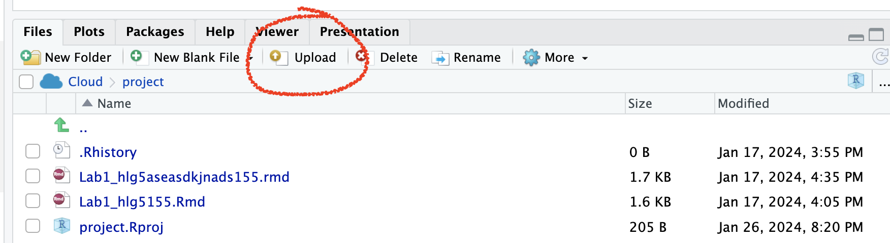
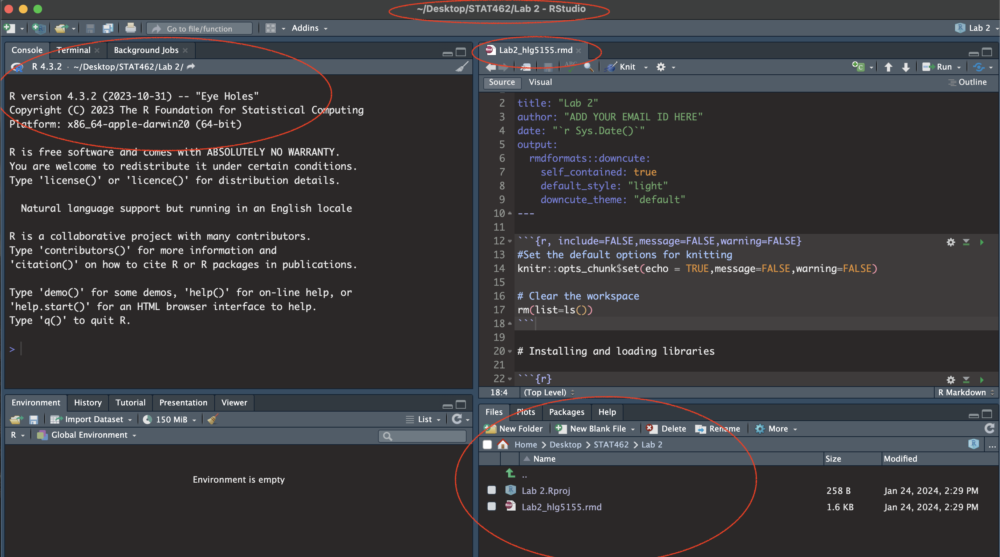
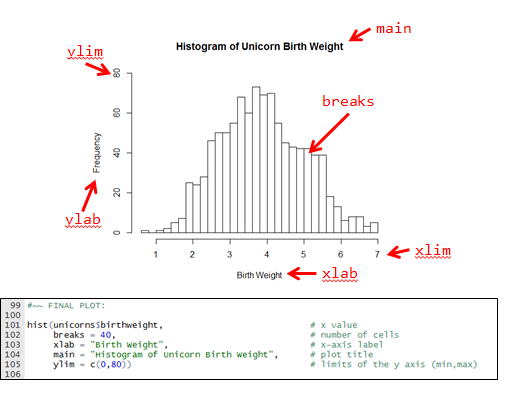

Lab 2
Aim
Welcome to lab 2. This is worth 10% (100 points) and you can drop your lowest lab out of six. The aim of the lab is to continue getting used to some basic exploratory data analysis, including
Getting help
Reading in data
Dealing with missing data
Making nice plots & summary statistics
This is a ONE WEEK LAB. You only have one lab session (today) working on this during class, then 10 days to finish up and write up. The maximum time it should take is about 4-5 hrs of your time. If you are stuck, ask for help.
1. Set up (DON’T SKIP)
[1.1] Create a project for Lab 2
If you are using the POSIT Cloud (AKA R-Studio online),
- Log in and make a new project for lab 2 using Tutorial 1B
If you are using R-Studio on your own computer/laptop
- Log in and make a new project for lab 2 using T1_ProjectsDesktop
- To open/re-open your project, look in the STAT462/Lab2 folder on your computer and double click the .RProj file (I often rename it something like OPENTHIS.RProj)
[1.2] Download the lab report template
Go to the Canvas assignment page and, download
Lab2_Template.RmD,DON’T FORGET THIS STEP!
RENAME THE FILE TOLab2_Email_ID.RmD(e.g. for me,Lab2_hlg5155.RmD)
You do this by right clicking on the file on your computer and selecting rename.Now place the file in your Lab 2 folder
For desktop users, do this outside R. E.g. go to your downloads folder and move the file to the Lab 2 folder on your computer.
On Posit Cloud, open your project, then look for the upload button in the Files tab.
Expand to see where the button is

[1.3] Edit the yaml code
- Inside R-studio, open your lab 2 project (if it’s not already open), then click Lab2_Email_ID.RmD to open it.
- Change the author name at the top to your email ID.
[1.4] Check Progress & knit
- You should have something like this
- e.g. you are in your project, you have downloaded/renamed your lab report and changed the author name. If you are stuck, either go back and redo the tutorials or talk to Dr G.
- Press knit and check it all works. You might need to install some packages.

(#fig:im_Lab02_SetUp)Your screen should look like this
2. Getting help
There are 60 of you and one of me. So we space where you can ask for help, I can answer a question once and you will all be able to see it.
We will do this using the ‘github’ help discussion boards, as they are then linked to the course Lab book and are designed for code. Github is a free online system designed for sharing and collaborating on computer code. It is widely used in the professional world
[2.1] Set up your Github Account
Go to https://github.com/ and either make an account or log in. Use any email address.
Click on the top right to go to your profile, then click edit and add in a few details about yourself or a photo (employers see this, think of it like claiming your LinkedIn page).
Expand to see me do this
- Now, under QUESTION 1 in your lab report, add the web address of your github profile as a clickable link (hint, remember Visual Mode to help you make links).
[2.2] Create your first ‘help’ post
- Now go here - https://github.com/psu-spatial/Stat462-2024/issues ``{=html}
- On the right, there is a button called “create an issue”. This is what you will click if you have a real question/issue.
- For now, we will make a test issue. Click “create a new issue”, say hello and attach a screenshot of your code (any screenshot is fine).
- You do not have to add anything into your lab report because I can see your test post.
3. Commands and data.frames (spreadsheets)
Please simply read this section before moving on. It will help later on, so please don’t skip. These are the top six things you need to remember to make R easy:
One: The structure of an R Command/Function
Commands, also called functions, in R - always have the same structure.
A command/function ALWAYS has parentheses/brackets ( ) after it, even if they are empty. This is how I know it’s a command
Inside the command, there is first the thing you want to apply it to, then any options.
And you save your answer using the little arrow
<-
In my second example, the command is mean, I am applying it to the numbers 1,2,3,4 and I have added in a final option na.rm=TRUE (ignore missing values), then saved the result to a variable called ans.
Two: To print a variable onto the screen or into your report, you can simply type its name
In the example above, I added ans, so that it would print the result.
You don’t need commands like
paste(),paste0()orprint(), although they can come in handy in more complex cases.
Three: You can see the help file for ANY command or inbuilt dataset by typing?commandname into the console
For example, try typing ?mean into the console. I don’t recommend typing this into a code chunk as it can confuse the computer when you press knit.
Hints for reading help pages.
First, READ THE TITLE (its the shortest way to see what the command does).
You can see the package the command is from at the very top,
Then what options are available then some details.
At the bottom of every help file is a worked example you can copy/paste into the console.
Four: You must run the library code chunk at the top for most commands to work.
AKA, you must open instagram by clicking its button, before you are able to make an instagram post or check your feed.
- You must also run the library code chunk at the top every time you restart R, just like when you restart your phone, you have to reopen all the apps you are using
Five: Within a table, you can select columns using the dollar sign
e.g. TableName$ColumnName (and it should autocomplete as you type the $)
For example,
new_ans <- mean(mytable$columnA)will take the mean of column A and save the result to a variable called
new_ans.
Six: You can also select within a table/object using SQUARE BRACKETS
e.g. TableName[ Row(s) , Column(s)]
- For example to select the second row and Columns 1-3 of my table, it would be
mytable[2,1:3] - We will do more of this in future labs.
4. Penguin data analysis
Essentially, we are now going to do the starwars analysis from Lab 1, but a bit slower and with more guidance. For those who enjoy R, it’s also a way to explore ggstatsplot and other graphics packages.
[4.1] Optional but recommended - data camp
If you are new to R, consider doing this chapter in data camp - https://campus.datacamp.com/courses/free-introduction-to-r/chapter-5-data-frames.
It will count for your participation..
[4.2] Add to your packages
Today we will be using commands from several packages.
In your lab report, find the library code chunk near the top (the one with all the library commands).
Add these libraries. Remember to run the code chunk! (pressing the green arrow, or go to the run button on the top right and press Run All)
{kind=link}
- If you get an error saying it doesn’t know about the libraries/packages, you might have to first install/download them from the app store (see The library tutorial )
[4.3] Load the data
We’re going to work with a table of data that’s already pre-loaded into R inside the palmerpenguins package.
Make sure you have first run the library code chunk above without error, or nothing below will work. Or go to the run button at the top and click run all.
In the Penguins section, create a new code chunk. To do this CLICK THE LITTLE GREEN BUTTON (Top Right) and choose the R option.
Load the data by entering and running this command. It will create what’s called a data ‘promise’ . In fact it will load two datasets, but we can ignore the raw penguin data.
Now let’s look at the data itself. If you look in the environment tab, you will see a new variable called
penguins.Click on it’s NAME to see the spreadsheet/table itself and familiarise yourself with the rows and columns.
We could have also looked at the data by either by typing its name into the console, or opening the tab IN THE CONSOLE using the command
View(penguins)1.
[4.4] Read the helpfile
For in-built datasets in R, there is a helpfile, similar to the one for each command. We want to look at this.
Type
?penguinsinto the CONSOLE. This will bring up the help file. Alternatively go to the help tab (next to packages) and search for penguins.
Using the advice in section 3, skim read the help file.
[4.5] Summarize what the data is about.
In your report, briefly describe the data to someone who wishes to understand what the dataset shows.
This description should be based on what you saw in the help file and dataset and include at minimum:
- The object of Analysis
- A reasonable population you would be happy to apply this dataset to*
- Variables and units - you are allowed to copy these names/units from the help file
*Imagine you are giving this analysis to a newspaper editor who wishes to twist your words. What population do you think this sample could safely represent? All penguins in all time and space?
[4.6] Print some of the data
The report reader will only be able to access what we see when pressing knit. So although you can see all the data, they won’t be able to. Equally, we don’t want to overwhelm your report reader by printing ALL the data by typing its name
Instead, we will print out the first few lines so that the reader can get a sense of what is going on.
To do do, create a new code chunk then use the command
head(penguins)to show the first few lines.
[4.7] Create summary statistics
Let’s use R to look at the summary statistics.
Leave a blank line and create a new code chunk containing the following code. The skim command comes from the skimr package. If it can’t find it, you might need to install the package or load it using your library code chunk
This command compiles the summary statistics for the penguin dataset - sometimes its easier to view this if you press the knit button and look at the html pop-up.
You can also use the summary() command to achieve a similar result.
- Choose which one of these you wish to include in your report. Make sure it runs - and press knit to make sure there are no errors so far (I compulsively click knit about every 2 minutes)
[4.8] Assess how much data there is
Its often useful to add how many objects there are in our sample and to check what variables they are (and if they match the help file..). To do this, I find the commands dim() , ncol() and nrow() useful, along with names().
- Make a new code chunk and apply each these commands to the penguin dataset (e.g.
dim(penguins)). - In the text below your code chunk, explain what each of the commands is showing.
[4.9] Describe any missing data
Missing data is denoted in R as “NA”. You can see this by looking at the data itself and also via looking at the output of your skim/summary command above. This section is so you add notes to remind yourself of what is missing so that you don’t forget later.
In your report, write a short description of how much data (if any) is missing.
- For example, are there entire rows missing? Certain columns?
Are there some columns where there’s not really much data?
- For example, are there entire rows missing? Certain columns?
Imagine you were about to use this for modelling. Write whether you are happy this is sufficient data, or whether there are an worries.
In lab 3, we will look at how to ignore/remove this missing data.
[4.10] Make frequency tables
This is often a useful way of summarising categorical data
First, make a frequency table of how many penguins were observed in 2008.
To do this, create a new code chunk and apply the
table()command to the year column of the penguin data.Hint 1: As I discuss in section 3, to choose a column, use the $ sign e.g. tablename$columnname
Hint 2, R IS CASE SENSITIVE!
Hint 3, for more help: https://www.statology.org/table-function-in-r/
Bonus, in a new code chunk, see if you can extend the table command to work out how many penguins were observed in 2008 on Biscoe Island. (e.g. a two-way table). You don’t need any fancy commands, the table command will do it if you edit the options.
[4.11] Histograms
The summary functions above let us talk about our numeric data pretty effectively. Let’s look at some professional plots to go with that analysis.
First, histograms are key for taking a quick look at data distributions. We will look at a few different methods of making them:
0.1.2.1 A. The ‘base R’ histogram, hist().
This is quick and easy, unless you want it to look good! This is the basic code
And here are two tutorials I like. ChatGPT will be able to give you even more options for making your ‘base-R’ histogram look good.
https://www.datacamp.com/tutorial/make-histogram-basic-r and
https://rstudio-pubs-static.s3.amazonaws.com/7953_4e3efd5b9415444ca065b1167862c349.html.
Which has wonderful graphics like this

Using my code and this tutorial (or any other), make a ‘professional looking’ base-R histogram for the
body_mass_gcolumn of thepenguindata. Remember things like units!Underneath your histogram: Write a few sentences on what this figure tells you about the distribution of the body mass of penguins in your dataset.
0.1.2.2 B. The ‘ggplot’ histogram
This is the ‘tidyverse’ version of making figures. It takes a while to get your head around, but people seem to like it and the plots can be made to look very sophisticated. Here is the basic code.
And here is a tutorial I like https://www.datacamp.com/tutorial/make-histogram-ggplot2#how-to-make-a-histogram-with-ggplot2%C2%A0-nowwe .
Using the code and this tutorial (or any other), make a ‘professional looking’ ggplot histogram for the
bill_length_mmcolumn of thepenguindata.Underneath your histogram: Write a few sentences on what this figure tells you about the distribution of the body mass of penguins in your dataset.
0.1.2.3 C. The ‘ggstatsplot’ histogram, gghistostats().
ggstatsplot is a new package designed to make quick and easy professional looking plots. It’s very powerful but sometimes hard (but not impossible) to adjust basic things like font size or adding custom breaks. For an example, see Friday’s lecture notes
Here is all the code you need for now
See if you can get it working. No need to edit further.
Underneath your histogram: Write a few sentences on what this figure tells you about the distribution of the body mass of penguins in your dataset.
[4.12] Scatterplots
Scatterplots are going to be key for our regression course. Again, there are a few ways of creating them:
0.1.2.4 A. The ‘base R’ scatterplot, plot().
This is quick and easy, unless you want it to look good! This is the basic code, although this time I didn’t actually type real column names…
# replace PredictorColumn and ResponseColumn with
# the column names of what you are plotting.
# R is weird, so THIS
# plot(x, y) separated by a COMMA
plot(penguins$PredictorColumn, penguins$ResponseColumn)
# IS THE SAME AS THIS
# plot(y ~ x) Separated by a TILDA
plot(penguins$ResponseColumn ~ penguins$PredictorColumn)And here a tutorial I like https://rpubs.com/riazakhan94/297778.
Using my code and this tutorial (or any other), make a ‘professional looking’ base-R scatterplot for any two numeric data columns in the penguin data. Remember things like units!
Underneath your plot: Write a few sentences on what this figure tells you about the relationship between your two chosen two variables.
- What should you write about the data in a scatterplot? See this tutorial for a description: https://www.khanacademy.org/math/ap-statistics/bivariate-data-ap/scatterplots-correlation/a/describing-scatterplots-form-direction-strength-outliers
We will get to ggplot scatterplots in Lab 3. For now..
0.1.2.5 B. The ‘ggstatplot R’ scatterplot, ggscatterstats().
Here is all the code you need for now
See if you can get it working for two DIFFERENT numeric columns of your choice than your first scatterplot.
- If you want to make a more fancy one, see some options here - https://allisonhorst.github.io/palmerpenguins/articles/examples.html
- If you want to make a more fancy one, see some options here - https://allisonhorst.github.io/palmerpenguins/articles/examples.html
Underneath your plot: Write a few sentences on what this figure tells you about the relationship between your two chosen two variables.
- What should you write about the data in a scatterplot? See this tutorial for a description: https://www.khanacademy.org/math/ap-statistics/bivariate-data-ap/scatterplots-correlation/a/describing-scatterplots-form-direction-strength-outliers
[4.13] Correlations
Finally, calculate the correlation between two variables of your choice in the penguin dataset
Hint, https://www.statology.org/r-correlation-with-missing-values/ . As you can see, dealing with missing values isn’t always na.rm=TRUE..
5. Submitting your Lab
Remember to save your work throughout and to spell check your writing (next to the save button). Now, press the knit button again. If you have not made any mistakes in the code then R should create a html file in your lab 2 folder which includes your answers.
For R desktop users:
If you look at your lab 2 folder ON YOUR COMPUTER, you should see your html and Rm there - complete with a very recent time-stamp.
In that folder, double click on the html file. This will open it in your web-browser.
CHECK THAT THIS IS WHAT YOU WANT TO SUBMIT.Now go to Canvas and submit BOTH your html and your .Rmd file in Lab 2.
If you are on posit cloud,
go to the files tab, then click the check box by your html file. Click the “more” blue cogwheel in the file quadrant menu options, then click export. This will download the file
Uncheck the box and check the box by your .Rmd file. Click the “more” blue cogwheel in the file quadrant menu options, then click export. This will download the file.
Now go to Canvas and submit BOTH your html and your .Rmd file in Lab 2.
Congrats! You are done.
Type this in the console because it’s an interactive command so the ‘knit’ button hates it.↩︎